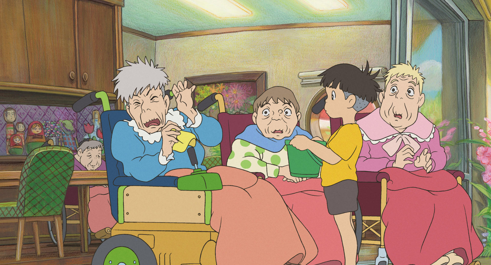
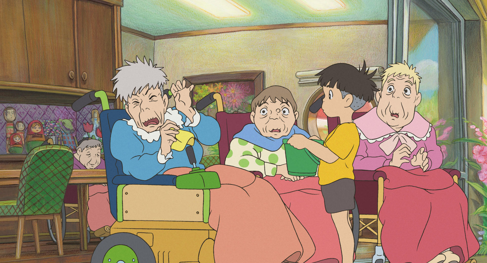

Ponyo – Uma Amizade que Veio do Mar é um filme de animação japonês dirigido por Hayao Miyazaki e produzido pelo Studio Ghibli.
Ponyo é uma peixinha dourada que conhece o garoto Sosuke. Ele a leva para a sua casa e decide cuidar dela. O amor e a amizade deles são tão grandes, que Ponyo resolve se tornar humana só para ficar mais tempo ao lado de Sosuke.